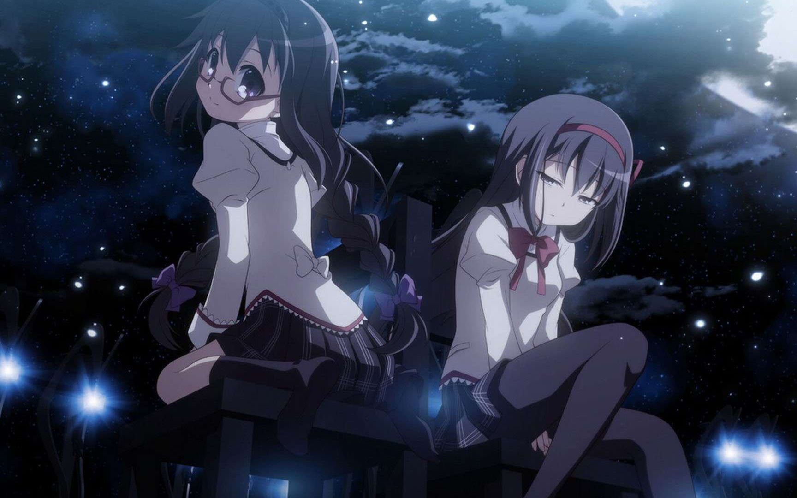
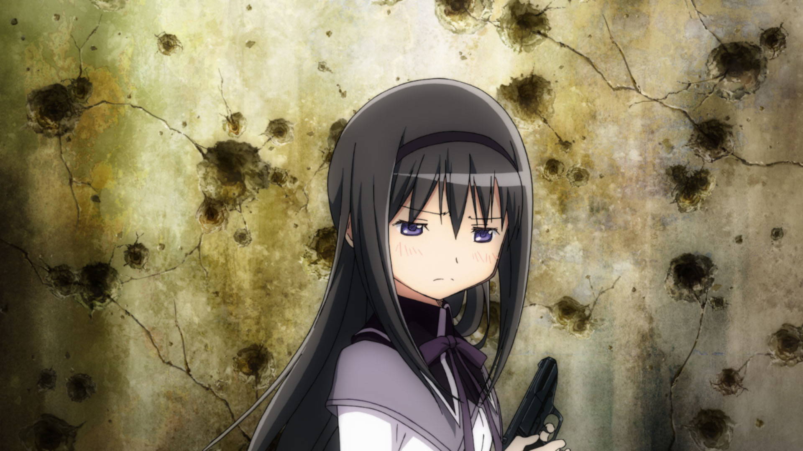
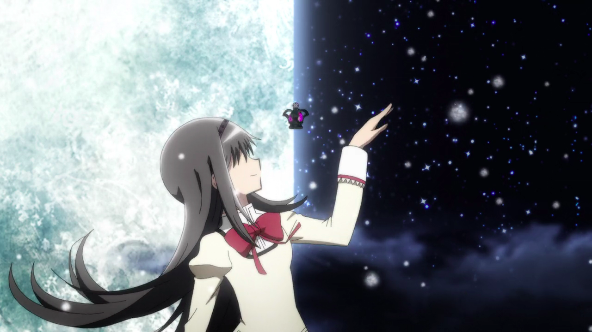

晓美焰
日本电视动画《魔法少女小圆》的女主角之一。
简介
| 绰号 | 轰姆轰姆 |
|---|
| 年龄 | 14岁 |
|---|
| 性别 | 女性 |
|---|
| 血型 | B型 |
|---|
| 身高 | 159.4公分 |
|---|
| 出生 | 日本 |
|---|
| 职业 | 中学生 |
|---|
| 亲属 | 双亲（未登场） |
|---|
| 热兵器 | 手枪、火箭筒、炸弹、88式陆基反舰导弹等 |
|---|
| 冷兵器及其他 | 高尔夫球棍、日式长弓 |
|---|
| 防具 | 金属盾牌 |
|---|
| 能力 | 时空操作 |
|---|
| 战斗力 | 11胜5负 |
|---|
设定
晓美焰在《魔法少女小圆》被赋予巴麻美之外另一名资深魔法少女的地位，在麻美死亡后，负责牵引故事的真相。晓美焰是“怀揣难题，人生止步”的角色，其故事结构已被写死，并被赋予“受困于无限轮回之中”的结构。
特色
随着剧情推进，焰的型态与性格发生了多次剧变，依外型可粗分为：
- 普通少女：眼镜娘，发型是两条麻花辫，戴着发箍。
- 魔法少女：其一为眼镜娘，使用冷兵器与热兵器。其二为黑长直，此后不戴眼镜，不使用冷兵器。其三俗称发带焰，黑长直，发箍、武器分别换成鹿目圆的红色发带、日式长弓。背上有白色或黑色翅膀。
- 魔女：其一俗称丧服焰，歌德萝莉，穿着黑色洋装，戴着发箍。双眼充血会流出鬼脚图。其二为胡桃夹子魔女，巨大化。
- 恶魔：其一俗称恶魔焰，巨大化，穿着无袖的黑色晚礼服，双腿著高跟鞋与过膝袜。背上有黑色羽毛翅膀，影迷推估身高约24米。其二为黑长直，脸上有黑眼圈，曾短暂配戴红色发带，其余与第2种魔法少女外型无异。
剧照



评价
-
彻卢西（Jacob Churosh）提出“尽管悠木碧的鹿目圆也很出色，但斋藤千和的晓美焰更胜一筹，其孤高冷酷的假面以惊人的速度崩溃后，导致她自我伪装的悲剧根源引人不住深掘”。
-
艾森拜斯（Richard Eisenbeis）认为，焰相当于“一个疯狂世界中唯一理智的人”，其台词往往具有双重含意，唯有二度观赏才能去体会。
-
贝弗里奇（Chris Beveridge）称赞道“焰一直是我眼中的关键角色，是我观看的原因，她很好地主宰了这部电影”。
-
艾森拜斯（Richard Eisenbeis）回应称“焰是一个伟大的角色，电影对本系列是有价值的补充”。
获奖
- 2011年，获选为Animage Grand Prix Editors Choice最佳动画女性角色。
-
2013年，在NHK纪念电视动画开播50周年的“最受欢迎的女主角”调查（わたしの大好きなヒロインたち）中排行第2名。
-
2014年，获选Newtype×Machi★Asobi动画奖（ニュータイプアニメアワード）虚构角色赏（女性）第4名。
- 2016年，获选“10大SHAFT女英雄”中第2名。